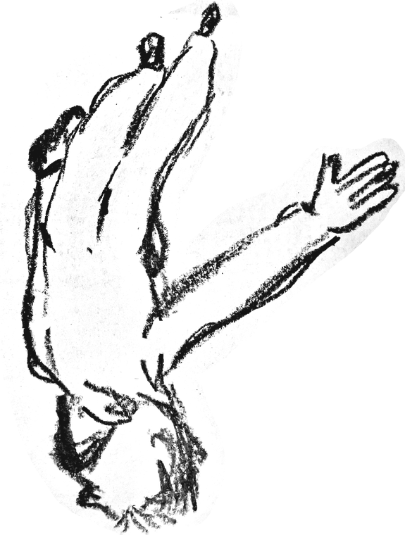
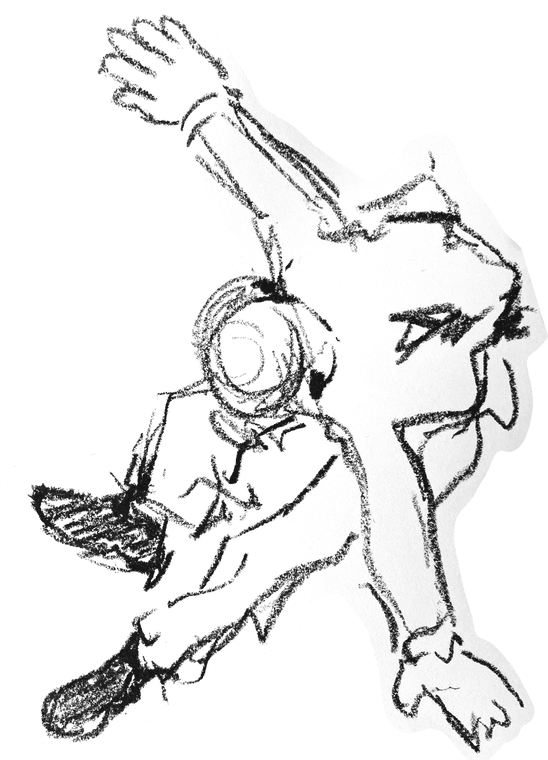
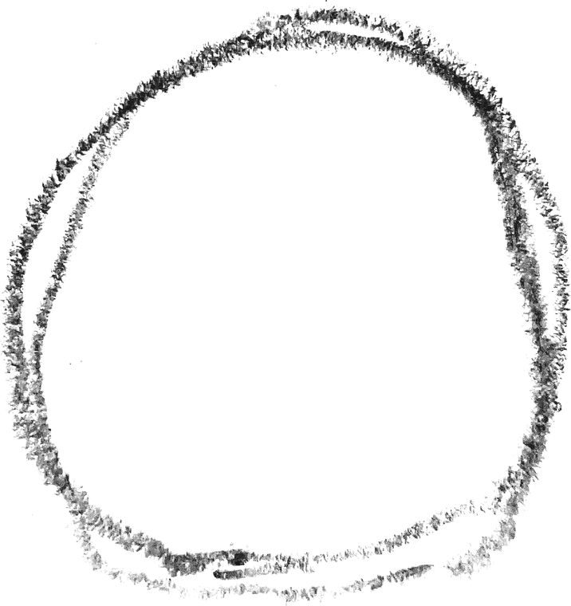
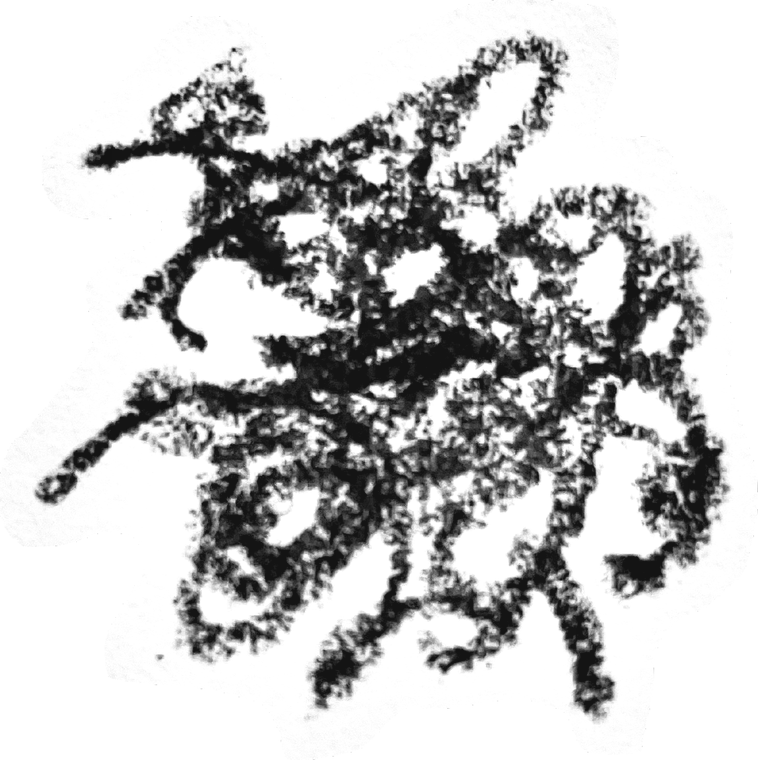

一件關於面對問題的互動作品

有些問題可以分析、解決，然後就過去了。有些問題沒有答案，我們反覆去想，久了會習慣，可是它一直都在。
這是一個大四學生的一個學期，從九月走到隔年二月。有些事處理完就過去了；有一個問題會反覆回來，每次回來，身邊的情況和你考慮的事都不太一樣。你不會事先知道哪些問題有解，只能邊走邊判斷。
約 15 分鐘，六章加一段尾聲。故事裡有一條線和家人生病有關，可以從一開始就略過，走到那裡時也可以略過。最後只會呈現你走過的路，不會替你下結論。
